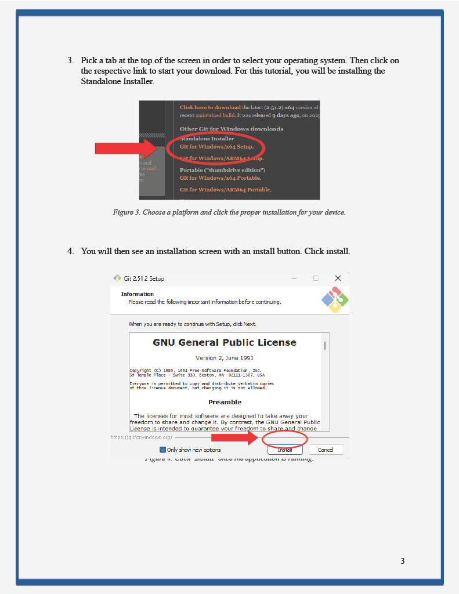
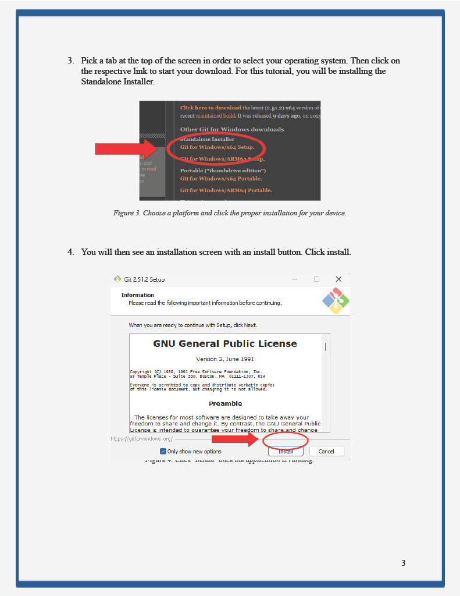
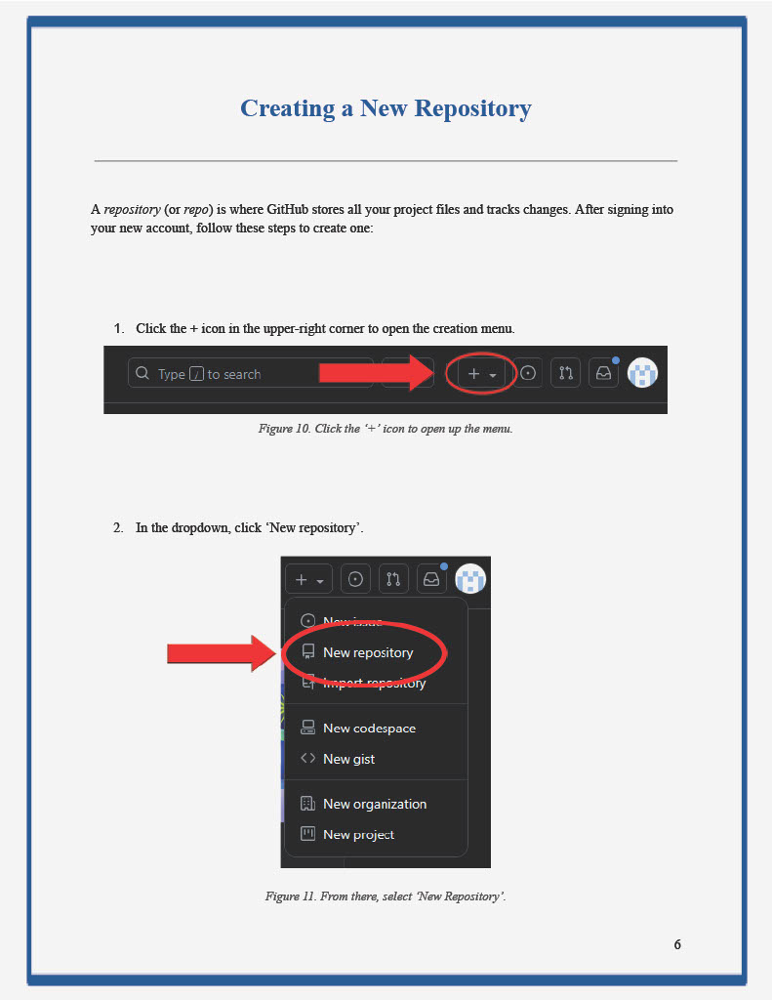
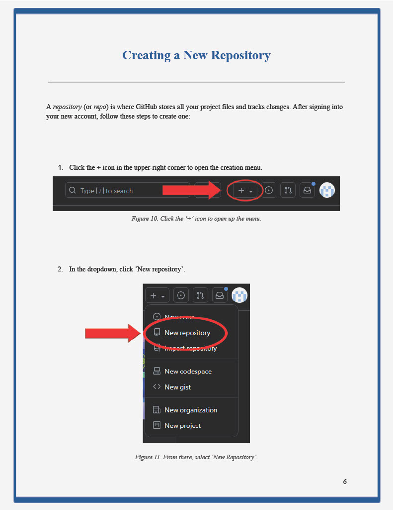
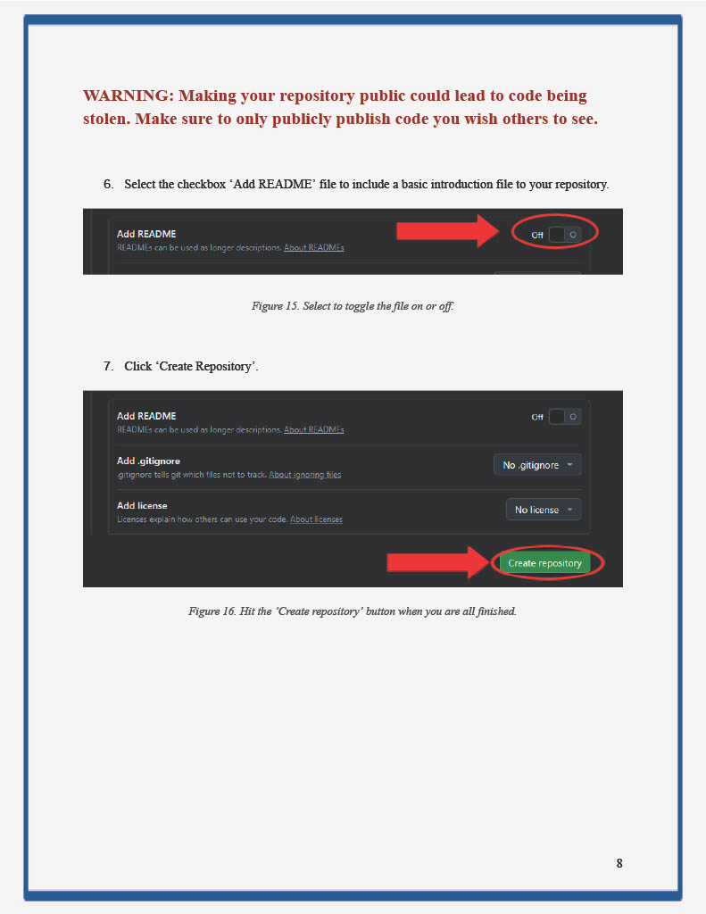
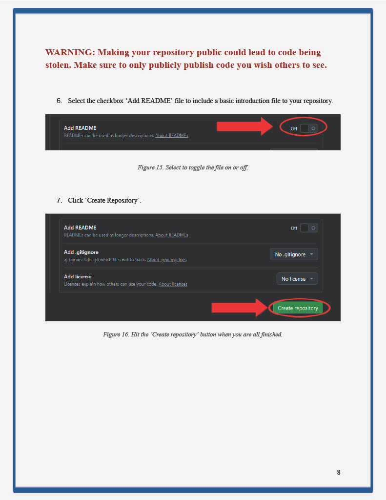

Project Description:
For this assignment, I was tasked with creating a detailed set of written instructions for a specific audience. I was given the choice to create the instructions on any topic of my choice. The purpose was to demonstrate an understanding of how to go about dividing a complicated task into smaller tasks and use clear, unambiguous language and meaningful illustrations.
My Approach:
For my project, I chose to create a guide aimed at beginner computer science students who may feel intimidated taking their first step into the coding world. I wanted to create a set of instructions that I wish I had when starting out. To approach the assignment, I first looked at other tutorials available for other repository networks. I looked at the layouts and actual content they were providing to get a sense of what mine should entail. Studying this document helped me understand how headings, explanations, and step-by-step procedures work together to support readers. I applied that model to my own project by including an introduction, a glossary, clearly labeled sections, numbered instructions, and warnings throughout.
Revision:
During revision, I focused mostly on my design and formatting. While I went for something different, it just came off as a little confusing and informal. In my revision, I reformatted my text to be left aligning as well as completely reworking my borders. I reorganized some sections to improve flow and expanded my warning to give more clarification. The content of my project was pretty focused originally, but I reworded some parts to avoid redundancy and a first person point of view. Finally, I slimmed down the document to meet the 1000 word count and fixed the sizing on my heading levels.
What I Learned About Technical Communication:
I learned that technical communicators always write and design under constraints such as word or page counts. This made me understand how important the meaning was in my word choice. With these constraints, it helped me to learn how to give my piece much more purpose and how to effectively communicate my ideas with the least amount of fluff. This project taught the idea of clearly conveying ideas and design that is digestible to a very specific audience. This project gave mea better understanding of how layout, and organization contribute to the effectiveness of a technical document.
Instructions Project

) 

)
) 

) 

)